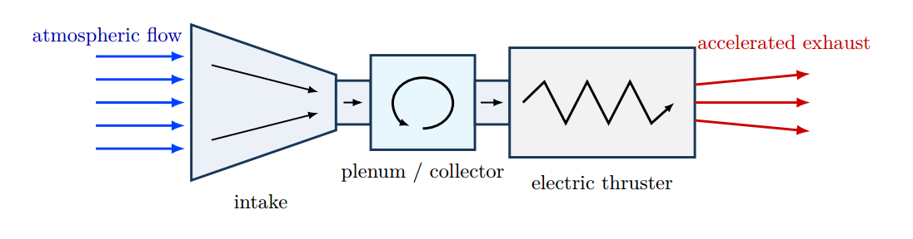

Research question
Can a miniaturized cryogenic active atmospheric intake collect and condition sufficient atmospheric propellant to support sustained atmosphere-breathing electric propulsion on a CubeSat in VLEO?
Approach
The research concept examines the interaction between intake geometry, atmospheric collection, thermal management, and system-level mass and power constraints. A deployable parabolic intake is considered in the 3U CubeSat architecture.
Engineering challenges
- Rarefied atmospheric flow, intake geometry, and collection efficiency
- Cryogenic cooling, gas adsorption, and propellant conditioning feasibility
- System-level thermal, power, and deployable-structure constraints, including comparisons with passive intakes
Results & documents
Under development. Add validated simulation figures, design drawings, methodology, and a technical report here. No performance result is claimed in this prototype.